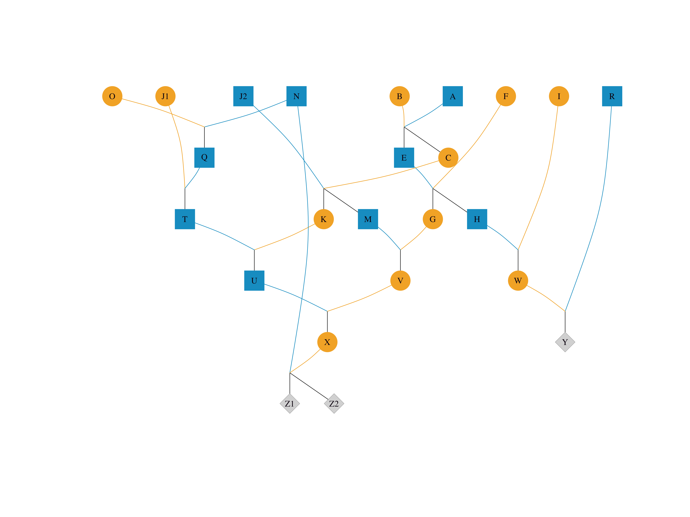

Visualizing complex pedigrees in R with visPedigree
Turn raw pedigree tables into publication-ready graphs in R. From simple family trees to compact views of thousands of individuals.
R
Visualization
Pedigree
Breeding
r-bloggers
Author
Sheng Luan
Published
July 26, 2026
A pedigree of ten individuals fits on a napkin. A pedigree of ten thousand is a spreadsheet you cannot read. In animal breeding, conservation genetics, and genealogy, pedigrees routinely span hundreds or thousands of records — yet they are almost always stored the same way: three columns, Ind, Sire, Dam, repeated row after row.
This tutorial shows how to go from that raw table to publication-ready pedigree graphs in R, using visPedigree.
A pedigree is fundamentally a parent-offspring table. Every row names one individual and, if known, its sire and dam. Here is a tiny example with six individuals across three generations:
Ind Sire Dam Sex
1 Sire1 <NA> <NA> male
2 Dam1 <NA> <NA> female
3 Sire2 Sire1 Dam1 male
4 Dam2 <NA> <NA> female
5 Offspring1 Sire2 Dam2 male
6 Offspring2 Sire2 Dam2 female
The table tells you who the parents are, but it gives no visual sense of relationships, generations, or family structure. Now let visPedigree turn it into a graph:
Figure 1: The same pedigree drawn by visped(). Each row is a generation. Circles: females. Squares: males. Parents connect to offspring via grey lines.
A few things are happening automatically:
Generations are inferred and arranged top-to-bottom.
Sex can be supplied explicitly, as in the example above, or inferred from whether an individual appears as a sire or a dam.
Founders — individuals without recorded parents — sit at the top.
This two-step workflow — tidyped() then visped() — is the core pattern you will use for every pedigree.
Preparing pedigree data with tidyped()
tidyped() validates, orders, and enriches your pedigree. Let us prepare a slightly larger pedigree that ships with the package:
tidy_small <-tidyped( small_ped,cand =c("Y", "Z1", "Z2"))# What did tidyped() produce?summary(tidy_small)
Pedigree Summary
================
Total Individuals: 24
- Males: 10 (41.7%)
- Females: 11 (45.8%)
- Unknown: 3 (12.5%)
Pedigree Structure:
- Founders (no parents): 9
- Both parents known: 15
Generation:
- Maximum: 6
- Distribution:
Gen 1: 9 individuals
Gen 2: 3 individuals
Gen 3: 5 individuals
Gen 4: 3 individuals
Gen 5: 2 individuals
Gen 6: 2 individuals
Reproduction:
- Individuals with offspring: 21
- Sires: 10 (Mean=1.5, Max=3 offspring)
- Dams: 11 (Mean=1.4, Max=2 offspring)
Full-sibling Families:
- Number of families: 11
- Mean family size: 1.36
- Maximum family size: 2
- Top families by size:
AxB: 2
ExF: 2
J2xC: 2
NxX: 2
HxI: 1
Candidates Traced: 3
================
tidyped() does several things in one call:
Validates that every sire and dam exists as an individual (or is NA for founders).
Orders individuals so that parents always appear before their offspring.
Infers generations (the Gen column) from the pedigree structure.
Detects and reports pedigree loops — circular parentage that would make the pedigree invalid.
Prunes to the relevant sub-pedigree when you specify cand.
The cand argument tells tidyped() which individuals you care about; it trims unrelated branches so your plot stays focused.
Your first pedigree graph
Once the pedigree is tidied, one line of code produces the plot:
visped(tidy_small, cex =0.6, symbolsize =10)

Figure 2: The small_ped pedigree, tidied with candidate individuals Y, Z1, and Z2.
The default visual encoding (shapeby = "sex") uses circles for females, squares for males, and diamonds for unknown sex. Each row of connected nodes is a generation, aligned for easy comparison.
To save the graph as a publication-ready vector file, add a filename:
For deep pedigrees, generation labels help readers navigate the graph. Use genlab = TRUE for default G1, G2, ... labels, or a character vector for custom text:
Figure 3: Custom generation labels on the simple_ped pedigree.
If labels appear too small, genlabcex adjusts them independently of cex.
Focusing on individuals — highlight and trace
In a large pedigree, you often need to draw attention to specific individuals: breeding candidates, genotyped animals, or carriers of a particular allele. The highlight argument does exactly that:
Figure 6: Tracing Y’s ancestors with trace = “up”. Only Y and its direct ancestral line are shown.
Set trace = "down" for descendants, or trace = "all" for both. This is invaluable when you need to answer: Where did this breeding candidate come from?
Compact mode for large full-sib families
Real-world pedigrees often contain large full-sib families. In aquatic species like shrimp and fish, a single mating can produce dozens of full siblings. Plotting every individual creates an unreadable wall of nodes.
Here we extract three full-sib families from a real breeding program — 1,120 offspring across three sire–dam pairs — and trace their ancestry through nine generations:
data(big_family_size_ped)tp <-tidyped(big_family_size_ped)# Select offspring from three sire–dam pairs in the most recent generationmaxgen <-max(tp$Gen)cand_offspring <- tp[Gen == maxgen & ( (Sire =="70Z5"& Dam =="7Z0Y") | (Sire =="70YZ"& Dam =="7ZZ0") | (Sire =="7009"& Dam =="7093")), Ind]# Trace up through all ancestorssub_ped <-tidyped(big_family_size_ped, cand = cand_offspring, trace ="up")# Shorten labels to last 4 characters to reduce cluttersub_ped$ShortID <-substring(sub_ped$Ind, pmax(1, nchar(sub_ped$Ind) -3))visped(sub_ped, labelvar ="ShortID", compact =TRUE,cex =0.35, symbolsize =8)
Figure 7: Three large full-sib families compacted into FS×N nodes, with nine generations of ancestry. Without compact mode, the bottom row would contain 1,120 individual nodes.
Each green-grey rectangle represents an entire family — FS×378, FS×367, and FS×375 for the three selected families. Without compact = TRUE, the bottom row alone would contain 1,120 individual nodes, making the graph unreadable. With compact mode, the pedigree structure is clear at a glance.
The labelvar argument tells visped() to display a different column as node labels — here, the last four characters of each ID instead of the full string. Compact family nodes (FS×N) are unaffected and continue to show family size.
For extremely large pedigrees, outline = TRUE draws the pedigree in silhouette mode — no individual labels, just the population shape — useful for quick visual inspection of population construction over generations.
This is what makes visPedigree different from a generic plotting wrapper — it understands pedigree structure and uses it to produce readable graphs at any scale. Core algorithms (inbreeding calculation, topological sorting, ancestry tracing) are implemented in C++ and scale to over one million individuals.
Inbreeding coefficients on the graph
Inbreeding is a central concern in breeding programs and conservation genetics. Run tidyped() with inbreed = TRUE to compute inbreeding coefficients, then set showf = TRUE in visped() to display them on the graph:
Figure 8: Inbreeding coefficients displayed alongside individual IDs. Individual G, the product of several generations of close mating within a small population, has F = 0.4375.
Each node now shows both the ID and its inbreeding coefficient (f), making it easy to spot individuals with elevated inbreeding at a glance.
Real-world applications
visPedigree is used in peer-reviewed research across livestock breeding, conservation genetics, and human genealogy:
🐖 Gochu Asturcelta pig — pedigree visualization of 471 individuals from 51 families (BMC Genomics, 2024).
🦏 Eastern black rhinoceros — observational pedigree construction to classify ancestry cohorts for inbreeding depression analysis (PNAS, 2025).
🐕 Labrador Retriever — pedigree quality control on 1,486,764 records, helping locate pedigree loops that were traced to incorrect sire assignments (Genetics Selection Evolution, 2025).
🦌 Wild caribou — pedigree construction and visualization after parentage inference with COLONY, supporting relatedness classification for network analysis (Global Ecology and Conservation, 2023).
Visualization is the entry point, but the same tidied pedigree object powers a complete analysis pipeline:
Population genetic summaries — pedigree completeness, generation intervals, and inbreeding statistics (pedstats()).
Genetic diversity analysis — founder and ancestor contributions, effective population size, and diversity half-life modelling (pedcontrib(), pediv(), pedne(), pedhalflife()).
Relationship matrices and matrix-free computation — additive, dominance, and epistatic relationship matrices, plus pedprod() for computing Ax and A⁻¹x without constructing the dense matrix (pedmat(), pedprod(), vismat()).
If you work with pedigree data in R — whether in animal breeding, conservation genetics, or genealogy — visPedigree provides a unified workflow from data preparation to publication-ready output.